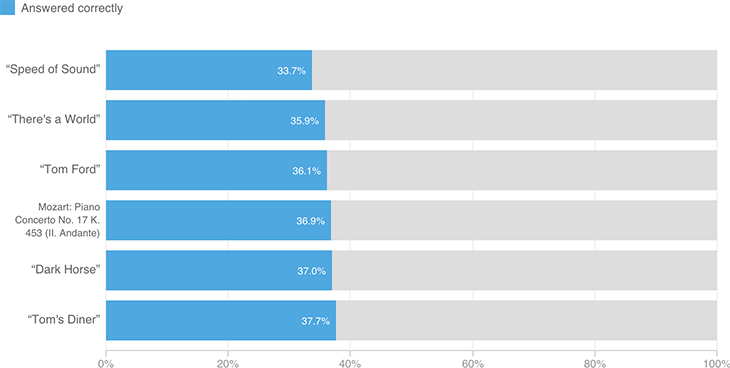

All That Noise and All That Sound
Users’ performance song-to-song did not vary much. The only song with any significant difference was Coldplay's “Speed of Sound” where users surprisingly chose the 128kbps mp3 more often than the uncompressed WAV.
